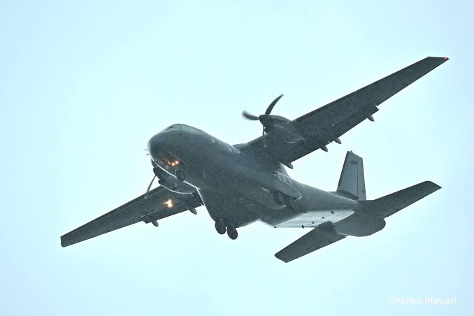
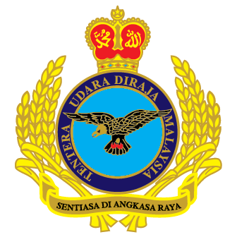
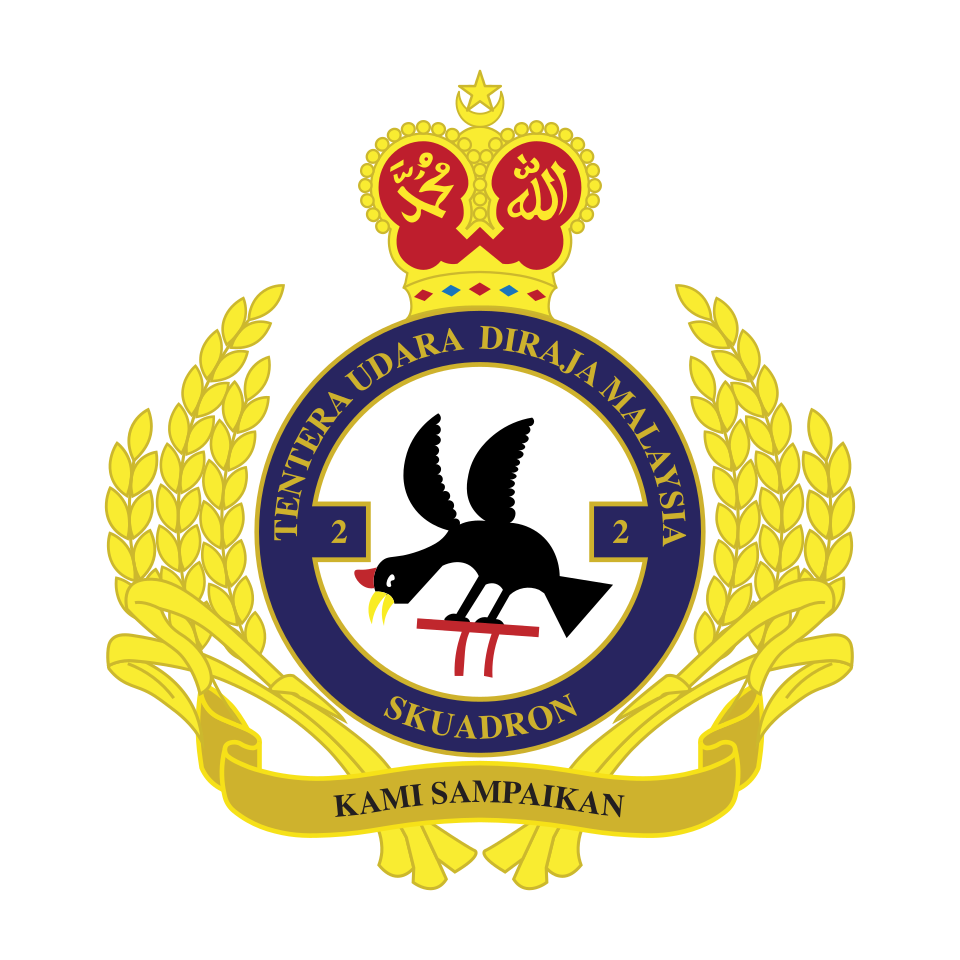

Pesawat latihan
PC-7 dan Cessna
LEFT SEAT with
Beyond the Cockpit
Pengalaman, disiplin dan kecintaan terhadap dunia penerbangan — diceritakan dari perspektif seorang juruterbang.

Meet the Pilot
Mej (B) Mohd Sofri bin Arshad, TUDM, merupakan bekas juruterbang Tentera Udara Diraja Malaysia yang kemudiannya meneruskan kerjaya dalam dunia penerbangan korporat dan jet peribadi.


Perjalanan penerbangan beliau bermula dengan pesawat latihan PC-7 dan Cessna, diikuti pesawat pengangkut tentera Caribou dan CN-235. Beliau turut berkhidmat dalam penerbangan VVIP menggunakan Fokker, sebelum meneruskan kerjaya dengan pesawat Global Express dan Gulfstream G4, G5 serta G6.
Pada tahun 2013, beliau didiagnosis dengan ketumbuhan otak. Namun, perjalanan kerjaya penerbangannya masih diteruskan selama hampir sembilan tahun, sebelum berakhir pada tahun 2022.
Hari ini, walaupun tidak lagi menerbangkan pesawat sebenar, kecintaan beliau terhadap dunia penerbangan tetap menjadi sebahagian daripada kehidupannya.
LEFT SEAT with Capt. Sofri diwujudkan sebagai ruang untuk beliau menikmati kembali dunia penerbangan melalui pengalaman, kenangan, simulasi penerbangan dan perkongsian santai.
Once a Pilot, Always a Pilot.
The Flight Journey
PC-7 dan Cessna
Caribou dan CN-235
Fokker
Global Express serta Gulfstream G4, G5 dan G6
Captain's Flight Log
Ruang untuk video dan aktiviti simulasi penerbangan akan dikemas kini apabila kandungannya tersedia.